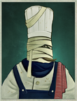
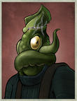
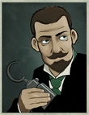
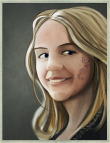
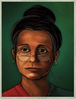
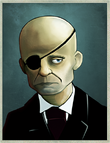

Officers
Someone wants to sign on!
Officers are crew members with specialised knowledge, though, confusingly enough, they don’t count against the number of people you have on your crew. There are six posts you can appoint officers to: First officer, cook, chief engineer, gunnery officer, surgeon, and mascot. The people you recruit have their own stories, which, upon completion, often allow you to promote them, thereby raising their stats, or to unlock certain items. Below you’ll find a table of promotable officers and a table of unlockable items.
{kind=link}
| Portrait | Original officer | Promoted officer | Stats | Post |
|---|---|---|---|---|
|  | Bandaged Poissonnier | Bandaged Chef-Paramount | +9 Hearts +5 Pages |
Cook |
|  | Nacreous Outcast | Nacreous Survivor | +8 Hearts +4 Pages +4 Mirrors |
Cook |
|  | Genial Magician | Prudent Magician | +6 Veils +4 Mirrors |
Chief Engineer |
| Genial Magician | Satisfied Magician | +6 Veils +5 Mirrors +1 Hearts |
Chief Engineer | |
| Genial Magician | Urbane Magician | -2 Hearts +8 Veils +6 Mirrors +3 Pages |
Chief Engineer | |
|  | Maybe's Daughter | Maybe's Rival | +7 Veils +6 Iron +150 Engine Power |
Chief Engineer |
| Maybe's Daughter | Nobody's Daughter | +7 Veils +3 Iron +100 Engine Power |
Chief Engineer | |
| Sigil-Ridden Navigator | Sigil-Eaten Navigator | +9 Mirrors +5 Veils |
First Officer | |
|  | Brisk Campaigner | Indomitable Campaigner | +9 Hearts +5 Iron +1 A Doctor Aboard |
Surgeon |
|  | Haunted Doctor | Determined Doctor | +9 Hearts +3 Pages +1 A Doctor Aboard |
Surgeon |
| Haunted Doctor | Disillusioned Doctor | +6 Hearts +6 Pages +1 A Doctor Aboard |
Surgeon |
| Officer | Item | Stats | Type |
|---|---|---|---|
| Tireless Mechanic | The Fulgent Impeller | +5 Iron +5 Mirrors +50% Fuel Efficiency +5000 Engine Power |
Engine |
| Irrepressible Cannoneer | Memento Mori | 19-25 Hull Dmg 27-37 Life Dmg 4 Crew Dmg 4s Warmup Time 2s Stagger |
Weapon (Forward) |
| Genial Magician | The Serpentine | +5 Hearts +5 Veils +10% Fuel Efficiency +1800 Engine Power |
Engine |
| The Cladery Heir | The Cladery Heart | Engine Power: 500 +5 Iron +10 Mirrors +10 Veils +10 Pages +15 Hearts |
Ship |